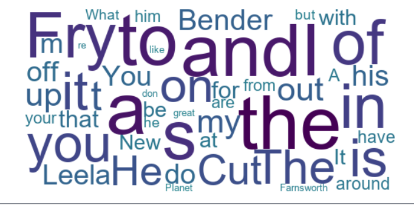
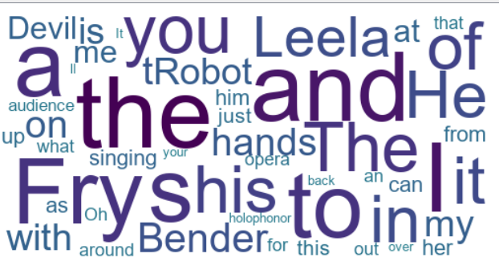

New New York Post
Data visualizations
Most used Words in Season 1, Episode 1.
Most used Words in Season 5, Episode 16.



The visualization show the frequency of which words had higher frequency. Both visualization had Fry, Bender and Leela as having a higher frequency.
Average Main Character Dialogue Frequency Per Episode - Season 1 v 5
Jupyter Notebook Visualizations
Jupyter Notebook Visualizations